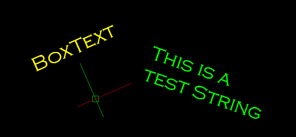

Box Text
This page is a copy of the original help page on Lee Mac's website, included here for offline reference. For the latest version, see the original page: https://lee-mac.com/boxtext.html
| Function Syntax | LM-BoxText – original syntax: BT (see aliases) |
| Current Version | 1.3 |
| Compatible with AutoCAD for Mac? | No |
| Compatible with AutoCAD LT? | Yes |
| Original Page | lee-mac.com/boxtext.html |
Program Description
This program performs in much the same way as the Express Tools' TCircle command: enabling the user to create a 2D polyline rectangular frame around selected Text & MText objects, with a user-defined offset. The program will also perform successfully with Text or MText defined in any construction plane, and under all UCS & view settings.
Upon issuing the command syntax BT at the AutoCAD command-line, the program first prompts the user to specify an offset factor for the text frame. This factor is multiplied by the text height for every selected text object to determine the offset of the rectangular frame from the text. At this prompt, the last used value is available as a default option.
If the offset factor is greater than zero, the program will also offer to apply an optional fillet to the text box, with the fillet radius being equal to the offset factor multiplied by the text height.
The program then prompts the user to make a selection of text and/or mtext objects. Following a valid selection, the program iterates over the selection and constructs a rectangular frame surrounding each object, offset by a distance determined by the given offset factor. The generated text box will inherit the basic properties of the enclosed text object (e.g. Layer, Linetype, Lineweight etc.).
Writing this program provided a fantastic learning opportunity into the methods of making a program compatible for use in all Views & User Coordinate Systems (UCS); and I would furthermore like to thank Gilles Chanteau (gile) for his help and advice on the subject.
Example of Usage

Bundled program notes
;;----------------------------=={ Box Text }==--------------------------;;
;; ;;
;; This program performs in much the same way as the Express Tools' ;;
;; 'TCircle' command: enabling the user to create a 2D polyline ;;
;; rectangular frame around selected Text & MText objects, with a ;;
;; user-defined offset. ;;
;; ;;
;; Upon issuing the command syntax 'BT' at the AutoCAD command-line, ;;
;; the program first prompts the user to specify an offset factor ;;
;; for the text frame. This factor is multiplied by the text height ;;
;; for every selected text object to determine the offset of the ;;
;; rectangular frame from the text. At this prompt, the last used ;;
;; value is available as a default option. ;;
;; ;;
;; The program then prompts the user to make a selection of text ;;
;; and/or mtext objects. Following a valid selection, the program ;;
;; iterates over the selection and constructs a rectangular frame ;;
;; surrounding each object, offset by a distance determined by the ;;
;; given offset factor. The generated text box will inherit the ;;
;; basic properties of the enclosed text object (e.g. Layer, Linetype, ;;
;; Lineweight etc.). ;;
;; ;;
;; The program will also perform successfully with Text or MText ;;
;; defined in any construction plane, and under all UCS & view ;;
;; settings. ;;
;;----------------------------------------------------------------------;;
;; Author: Lee Mac, Copyright © 2010 - www.lee-mac.com ;;
;;----------------------------------------------------------------------;;
;; Version 1.2 - 2015-02-22 ;;
;;----------------------------------------------------------------------;;
Command Names And Aliases
This page is a copy of Lee Mac's page: the commands keep their original names as aliases. Each program has one main command starting with LM-. The short names are its aliases: they run the same command, and can be added, renamed or removed in Dyl-Suite (saved in Resources\Aliases.csv).
| Command | Aliases | Name |
|---|---|---|
| LM-BoxText | BT | Box Text |